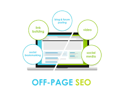

Off-page SEO refers to actions taken outside your website to improve ranking. It mainly focuses on building authority.
Backlinks are links from other websites pointing to your site. They act as trust signals for search engines.